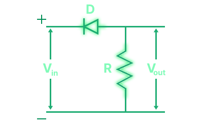
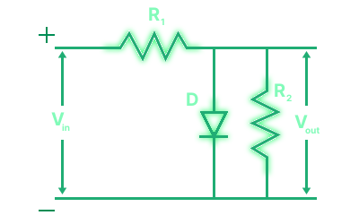
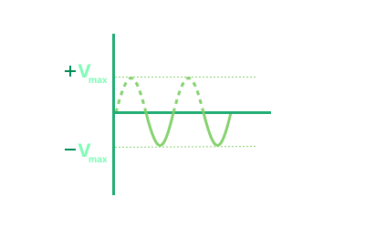
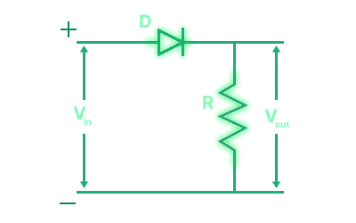
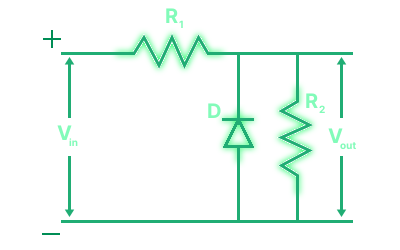
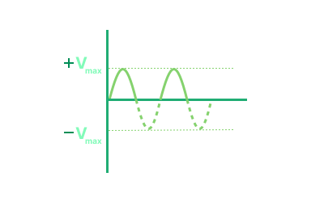

1. The Core Logic: How do they work?
A clipper is a circuit having a diode, which acts like a one-way smart switch.
- Forward Biased (Switch CLOSED): The diode turns ON when the voltage pushes through it. It acts like a short circuit (or a tiny 0.7V drop for practical silicon).
- Reverse Biased (Switch OPEN): The diode is OFF. It acts like an open circuit. The signal flows right past it to the output, untouched.
2. Positive Clippers
These circuits chop off the positive half-cycle of the input signal. The diode is oriented to conduct during the positive swing.
Series Positive Clipper
Diode is in series with the load, pointing away from the input. It blocks the positive half-cycle and allows the negative half-cycle to pass.
During +ve half cycle:
- Diode is reverse biased.
- Since load resistance is in series to the diode, output voltage becomes zero.
During -ve half cycle:
- Diode is forward biased.
- Since load resistance is in series to the diode, the -ve part of the voltage conducts through the load.


Shunt Positive Clipper
Diode is parallel to the load, pointing towards ground. It shorts the positive half-cycle to ground and forces the negative half-cycle to the load.
During +ve half cycle:
- Diode is forward biased, hence act as a short circuit.
- Since load resistance is in parallel to the diode, current takes the low resistance path of the diode, instead of the load.
- Hence, the +ve part does not go through the load.
During -ve half cycle:
- Diode is reverse biased, hence act as an open circuit.
- Since load resistance is in parallel to the diode, current takes the path of the load.
- Hence, the -ve part goes through the load.


3. Negative Clippers
Diode is in series with the load, pointing away from the input.
Series Negative Clipper
Diode is in series with the load, pointing towards the input. It blocks the negative half-cycle and allows the positive half-cycle to pass.
During +ve half cycle:
- Diode is reverse biased.
- Since load resistance is in series to the diode, output voltage becomes zero.
During +ve half cycle:
- Diode is forward biased.
- Since load resistance is in series to the diode, the -ve part of the voltage conducts through the load.


Shunt Negative Clipper
Diode is parallel to the load, pointing towards ground. It shorts the negative half-cycle to ground and forces the positive half-cycle to the load.
During +ve half cycle:
- Diode is reverse biased, hence act as an open circuit.
- Since load resistance is in parallel to the diode, current takes the path of the load.
- Hence, the +ve part goes through the load.
During -ve half cycle:
- Diode is forward biased, hence act as a short circuit.
- Since load resistance is in parallel to the diode, current takes the low resistance path of the diode, instead of the load.
- Hence, the -ve part does not go through the load.


4. Biased Clippers: Setting Custom Limits
What if we don't want to clip exactly at 0V (ideal) or 0.7V (practical)? By adding a DC battery (VB) in series with the diode, we shift the exact voltage level at which the diode decides to turn ON. The clipping level becomes a function of VB and the diode's built-in potential.
5. Positive Biased Clippers
Clipping the positive half-cycle, but shifted by a DC voltage source.
Positive Bias (+ve Terminal Up)
The battery opposes the input voltage. The diode only conducts when Vin exceeds VB + 0.7V. Clips everything above this level.


Positive Bias (-ve Terminal Up)
The battery aids the input voltage. The diode conducts even for small positive inputs. Clips everything above -VB + 0.7V.


6. Negative Biased Clippers
Clipping the negative half-cycle, shifted by a DC voltage source.
Negative Bias (+ve Terminal Up)
The battery opposes the negative swing. Clips everything below VB - 0.7V.


Negative Bias (-ve Terminal Up)
The battery aids the negative swing. Clips everything below -VB - 0.7V.